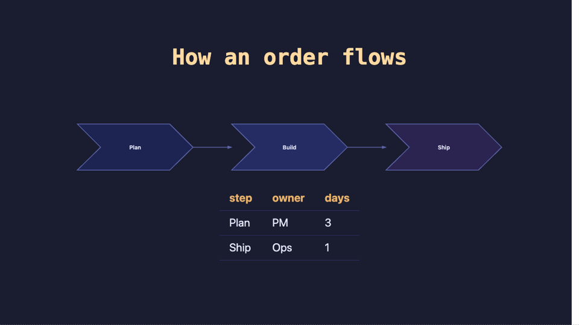

Decklight
Your deck is plain HTML: data only, no code, and versioned in git from the very first save. Your agent writes it, a headless browser checks it, and the speaker notes read themselves out loud.
npx decklight@latest init "My Talk"
That’s the install. Now tell your agent what the talk is about.
One real talk, from an empty folder to a published link. Click it and it talks. → next, Space for voice, ? every key. Open full screen ↗
01
Say what the slide should do. Go get a coffee. Press A when you want to argue about one slide. Here, Claude Code gets one prompt and edits the deck:
02
Your slides get tested before your audience does. Clipped text, a missing picture or a [click] out of step fails the check, not the talk. Every theme has already passed its contrast gate.
03
Diff it, blame it, revert the font somebody “just tried”. Decklight splits your work into tidy commits and writes their messages for you. Reviews arrive as a branch, or as one review file the reviewer sends you, if that’s how you roll. No accounts, no cloud, no “who has edit access?”.
04
Edit a sentence, the voice-over follows. Live narration, your own voice, a lip-synced face, an mp4. Nobody re-records anything, ever.
05
Plugins and design systems from a marketplace, and every SVG shape, colour and note still yours to nudge by hand.
Go on, press things.
Native SVG that draws itself in. Scaled and perfectly crisp on every screen.
Deeply satisfying keystrokes in every terminal on this page. Mute it, we dare you.

talk.pptx → decklight importYour .pptx, Keynote or Slides deck comes over. SmartArt arrives as a real diagram which you can edit. Export back to PowerPoint, or even PDF if you really need to.
46 built-in themes, every one contrast-checked. Press T until you’re happy.
Your company’s design system, referenced, never copied. Off-brand colours get flagged before anyone notices.
All actions at your fingertips. Press /, type a few words, hit Enter.
We like them. We just stopped making slides in them.
| Decklight | Reveal.js | Keynote | Google Slides | PowerPoint | |
|---|---|---|---|---|---|
| Your agent writes it | With the authoring contract | It’s HTML, nobody checks the result | No | Gemini drafts, you drag | Copilot drafts, you drag |
| It checks itself | Headless check before you look | No | No | No | No |
| Diffs and reviews in git | Commits written for you | Yes | Binary bundle | Version history, not a diff | Version history, not a diff |
| Notes become the voice-over | Live, and re-voiced on edit | No | Record it yourself, again | No | Record it yourself, again |
| Plugins and brand systems | Marketplace and design systems | Plugins | Themes | Add-ons | Add-ins and templates |
| One file that opens offline | One HTML file | A folder of assets | Needs Keynote | Needs a browser and an account | Needs PowerPoint |
| Imports the others | pptx, Keynote, Slides | No | pptx | pptx | Keynote and Slides via export |
| Drag-and-drop canvas | Double-click, drop, drag | No | Best in class | Yes | Yes |
| Ten people editing live | On purpose: reviews are branches | No | Via iCloud | Best in class | Yes |
The long version of each lives in the README.
Write slides, get a deck. bundle hands over a single HTML file.
Describe a slide in the side panel. Every edit is a commit you can read.
Double-click text, drop a picture, drag a slide. ⌘Z forgives.
A company’s templates and tokens, referenced. Updates arrive on their own.
Shapes, charts and graphics in native SVG. Never a screenshot.
Reveal step by step, morph between slides, draw diagrams in.
All contrast-checked. Or generate yours with a keystroke.
Real recordings, replayed live. Thocky, creamy or clacky.
Live TTS, captions, a pop quiz, or your own voice one beat at a time.
decklight video renders mp4, subtitles included. Re-voices what changed.
Comments ride a git branch. No service, no chat, no seats.
A stranger’s deck lists its scripts first and runs without trust if you say no.
pptx, Keynote or Slides in. Charts as data, SmartArt as diagrams.
Someone still wants “the file”? pptx or pdf, one palette row.
Hide slides without deleting them. Learn which slide always runs long.
GitHub Pages in one command. Netlify, Vercel or any folder.
No binary formats anywhere. Agents and diffs read every byte.
A silent snapshot every 30 seconds. H shows every version, one key restores.
Press /, type a few words, hit Enter. Like VS Code, minus the extensions tab.
npx runs it, nothing to install. You get a deck and a skill your agent reads.
import brings it over, and anything that can’t cross is named, slide by slide.
One CLI and one / palette away. The README has the long version.